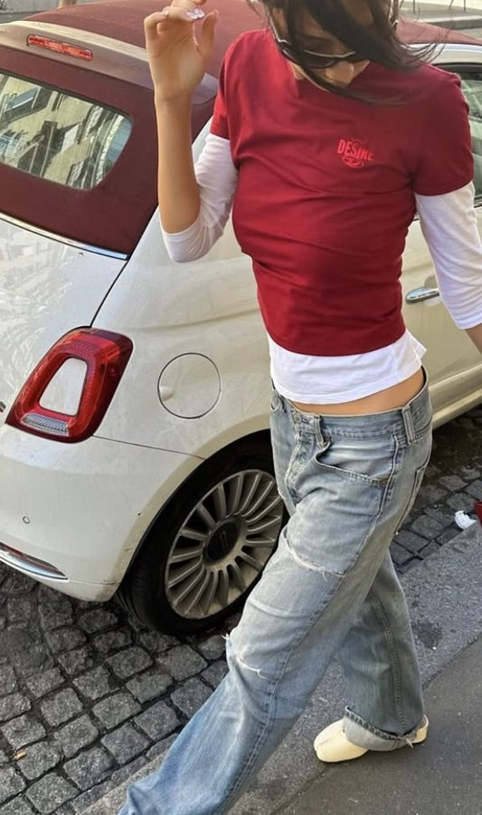
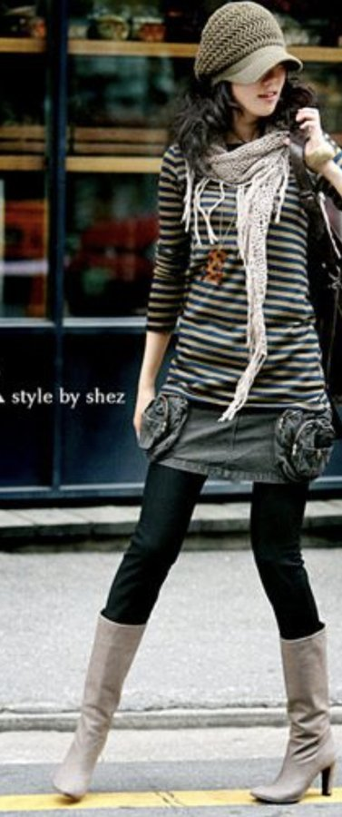

9:41
Y2K Grunge
Tap one outfit pin to recreate it
Plaid bomber & light denim

Red tee & light denim
Yellow polo & baggy jeans

Stripes, scarf & tall boots
 Plaid bomber & light denim
Plaid bomber & light denim